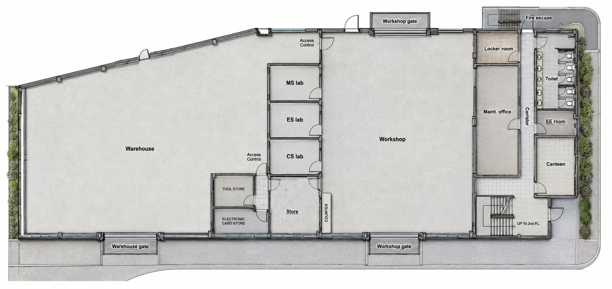

Web App URL
Floorplan Monitor
Zone 1 — A
Zone 2 — B
Zone 3 — C

ZONE 1
IDLE
ZONE 2
IDLE
ZONE 3
IDLE
สถานะ Write Board
คลิกการ์ดเพื่อแก้ไข Device Info
กำลังโหลด...
สถิติสรุป แยก Write Board
กำลังโหลด...
จำนวน Detect ต่อ Board
ประวัติ Detect
Detect รายวัน แยก Board
Log ย้อนหลัง
กำลังโหลด...
โหมดการทำงาน
กำลังโหลด...
WiFi สำรอง
ตั้ง WiFi สำรองแยกแต่ละบอร์ด — บอร์ดจะ poll ค่าใหม่ทุก 10 นาที
WiFi หลัก (BGRIMM-GUEST) hardcode อยู่ใน firmware — บอร์ดจะลอง Primary 3 ครั้ง ถ้าล้มเหลวจึงสลับมา Backup อัตโนมัติ
กำลังโหลด...
ตั้งค่าขั้นสูง
General
ค่า Default Fallback
Mode 1 (24H) และ Mode 4 (ปิด) — บอร์ดจะใช้ค่านี้เสมอ
Mode 2 และ 3 — ใช้ค่าจาก "ตารางเวลาแยกรายวัน" ด้านล่างแทน (ถ้าวันนั้นปิดใช้งาน จะ fallback กลับมาใช้ค่านี้)
Mode 2 และ 3 — ใช้ค่าจาก "ตารางเวลาแยกรายวัน" ด้านล่างแทน (ถ้าวันนั้นปิดใช้งาน จะ fallback กลับมาใช้ค่านี้)
Force Relay
สถานะ: ปกติ
ตารางเวลาแยกรายวัน
ใช้กับ Mode 2 และ 3
| เปิดใช้ | วัน | เริ่ม | สิ้นสุด | Relay Timeout (วิ) | Poll Interval (วิ) |
|---|
ตารางสรุป 1 อาทิตย์
| วัน | DD/MM/YYYY | เวลาเริ่ม–สิ้นสุด | Relay Timeout | Poll Interval | สถานะ |
|---|
ประวัติการเปลี่ยนแปลง
กด "โหลด" เพื่อดูประวัติ